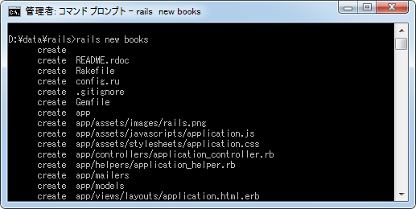

アプリケーションの作成
Railsでは全く何もないところからアプリケーションを作成していくのではなく、アプリケーションの雛形を自動でまず作成し、その後で必要な箇所を修正する、という手順で開発を行ないます。
アプリケーション用のディレクトリ
これから開発する新しいアプリケーション用に雛形となる各種ファイルを自動生成するのが「アプリケーション作成」です。ここではアプリケーション作成の手順について解説します。
作業はコマンドプロンプトから行ないます。コマンドプロンプトを起動し、新しく作成するアプリケーションのファイルを設置する親ディレクトリ(好きなディレクトリで結構です)に移動して下さい。
今回は「d:\data\rails\」ディレクトリ以下にRailsのアプリケーションを作成していくこととしました。今後アプリケーションを作成していくと、次のようにファイルが作成されていくことになります。
D:\ -- [data] -- [rails] --+-- [アプリケーション1] --+-- ...
| +-- ...
|
+-- [アプリケーション2] --+-- ...
| +-- ...
|
ディレクトリはアプリケーション毎なので、作成したアプリケーションの数だけディレクトリが並んでいくことになります。(もちろんアプリケーション毎に全然別のディレクトリに作成されても構いません)。
アプリケーションの作成
それではrailsコマンドを使ってアプリケーションを作成します。書式は次のとおりです。
rails new アプリケーション名 [option]
例えば"books"という名前のアプリケーションを作成する場合は次のように入力します。
rails new books
オプションはいくつかありますが、例えばアプリケーションで使用されるデフォルトのデータベースを指定することができます。(省略した場合はSQLite3が使用されます)。オプションはまた別のページで詳しく解説しますが、例えばMySQLをしようする場合は次のようにオプションを付けてrailsコマンドを実行します。
rails new books -d mysql
ではコマンドプロンプトから「rails new books」と実行します。
次のように様々なファイルが作成されていきます。

ファイルの作成が終わると「bundle install」が自動で実行されます。(bundle installについては別のページで解説します)。
次のような表示が行なわれるとアプリケーションの作成は完了です。
※ この時、次のようなメッセージが表示された場合はDevKitのインストールが必要です。(参考：RubyをインストールするときにDEVKITありのものが用意されています「Rubyのダウンロードとインストール」)。
Please update your PATH to include build tools or download the DevKit from 'http://rubyinstaller.org/downloads' and follow the instructions at 'http://github.com/oneclick/rubyinstaller/wiki/Development-Kit' An error occured while installing json (1.6.5), and Bundler cannot continue. Make sure that `gem install json -v '1.6.5'` succeeds before bundling.
ファイル構成
アプリケーションを作成すると、アプリケーション名と同じ名前でディレクトリが作成され、ディレクトリの中に雛形となる各種ファイルが作成されます。
今回は"books"というアプリケーション名を指定してアプリケーションを作成しましたので、"d:\data\rails\books\"というディレクトリが作成され、その下に様々なディレクトリが作成されています。
各ディレクトリがどのような使われ方をするのかについては、実際に使われる時にご説明いたします。
( Written by Tatsuo Ikura )

著者 / TATSUO IKURA
初心者～中級者の方を対象としたプログラミング方法や開発環境の構築の解説を行うサイトの運営を行っています。